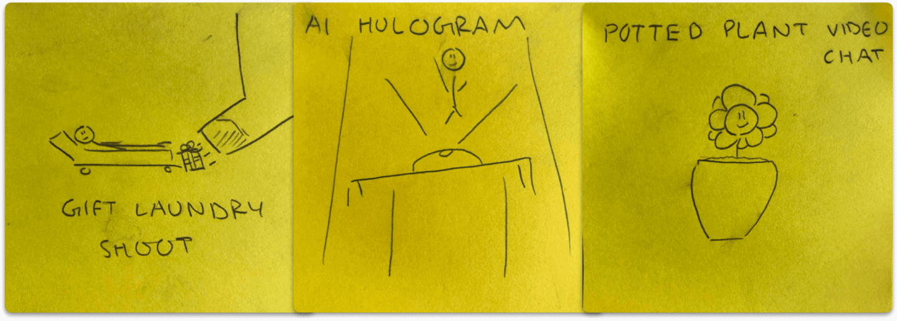
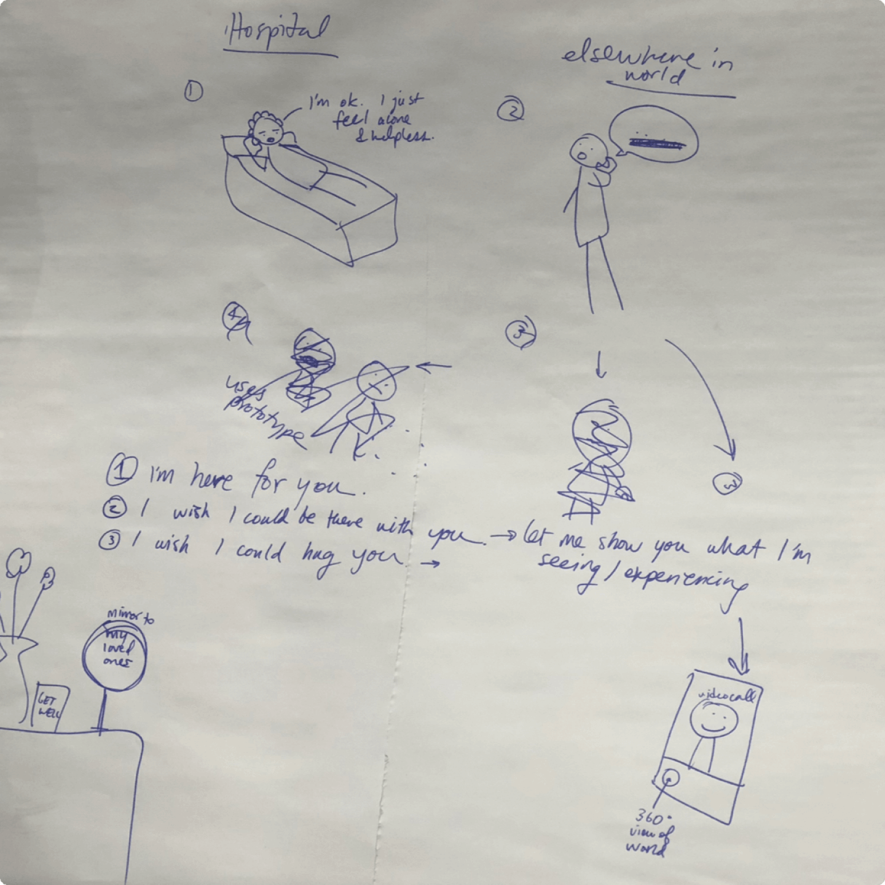
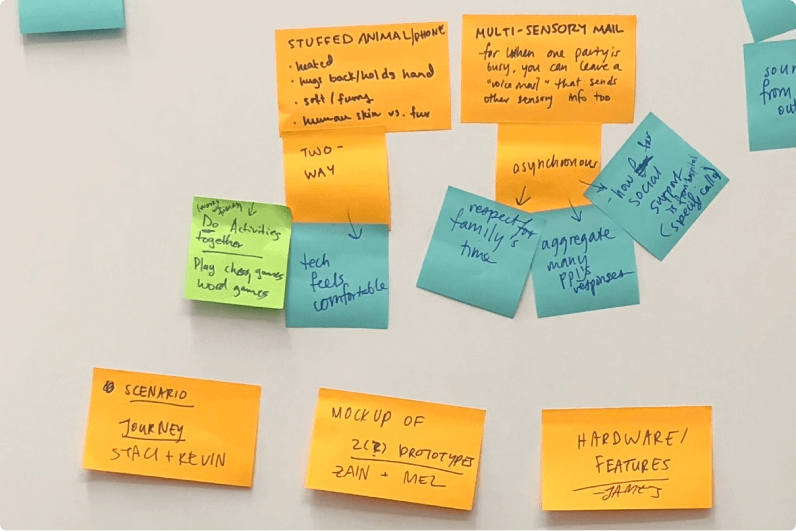
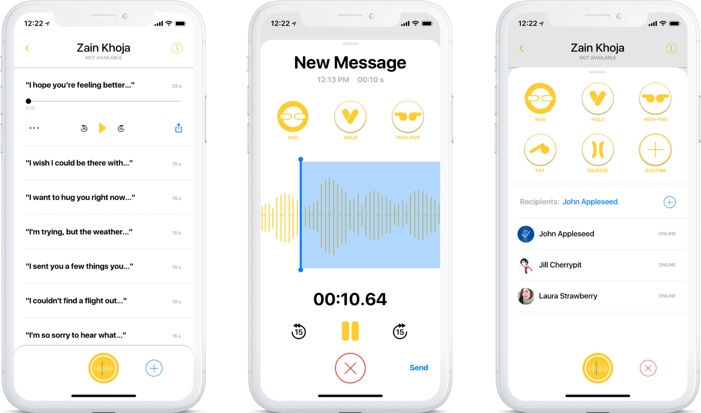
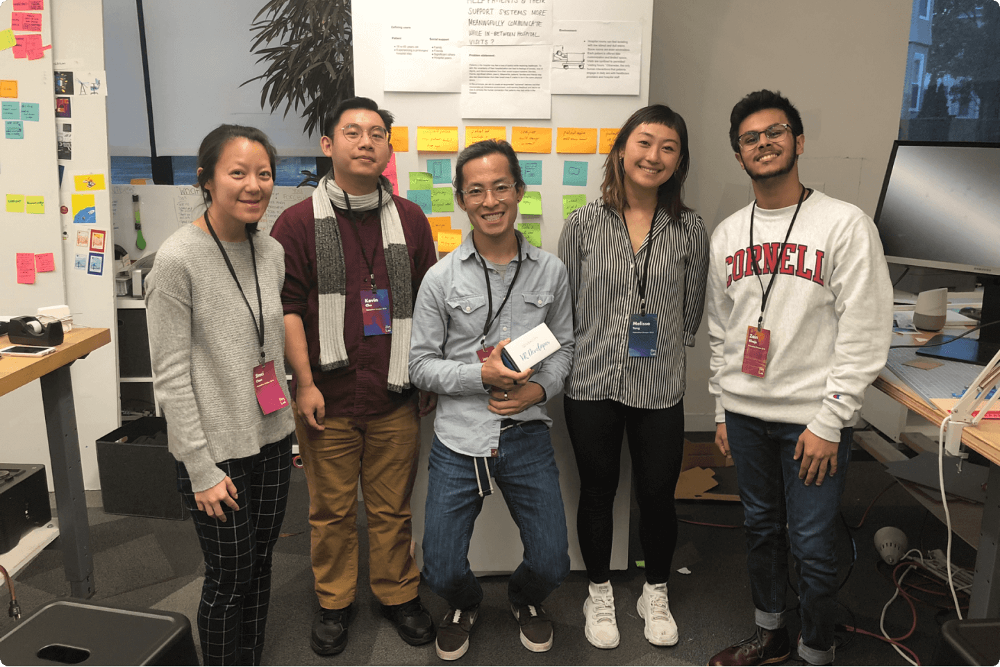

Ideating a way to create meaningful hospital visits through cohesive digital experiences over long distances.
User Interface Designer
User Experience Designer
Melissa Teng, Designer
Staci Chan, Occupational Therapist
Kevin Chu, Engineer
James Kim, Engineer
October 2018
The IDEO CoLab is the R&D branch of the design agency IDEO, focusing on creating products and ideas that synthesize the world’s emerging technologies. In the Winter of 2018, this meant taking a closer look at the applications of circular economies, collaborative cities, dynamic workforces, and open financial systems.
Participants were split into groups of 4 to 5 to collaborate on specific problem spaces that could possibly be solved using these technologies. My group consisted of a graduate student from Emerson studying Civic Media, an occupational therapist from Chicago, a computer science student from Columbia, and a freelance engineer who could work with anything from virtual reality to network communications.
The problem space we were handed was to create a cohesive design experience for users over long distances. This problem was open-ended, yet just specific enough for us to come up with a few different applications. From enhancing online meetings to making long-distance relationships easier, there was plenty of opportunity. However, our group’s strengths were evidently more concentrated in the area of healthcare. We chose to use our group’s experience to solve the problem of visiting hospital patients from across the world.
Part of IDEO’s design process was a detailed method meant to generate ideas without judgement. So, after defining our problem to helping patients feel closer to their loved ones from far away, we began brainstorming.
Among our weirdest ideas were video-chatting with a potted plant and laundry shoot to deliver gifts at the foot of the patient’s bed, like Santa.
However, scoping out the ideas that would truly accomplish the goal of creating a meaningful hospital visit was exhausting. What makes a visit meaningful? How does one recreate meaning in virtual space? What about the feeling that a patient experiences when receiving a hug or a gift? It was almost a spiritual feeling that we strived to recreate. Even our crude illustrations struggled to explain the immaterial feeling we needed to replicate in a digital medium.
Patients want to feel near their loved ones, but can’t do this because of long distance and modern tools that don’t extend past audio and video. What if we could send a hug along with a voicemail? We thought memory wire in a blanket or bed would be a feasible sensor solution for the physical aspect of the solution.
Our resident virtual reality master used Unity to mock up an 'avatar' that could wrap its arms around the user in virtual space while the memory-wired bed or blanket could squeeze physically, simulating the feeling of a hug. We painted a user’s journey through this process of opening and receiving a message, recording messages that would be played back, and motions of the virtual avatar.
Creating an interface in less than an hour while also trying to achieve the complexity of our solution was a huge challenge. The Apple Voice Memos app provided a good starting point for recording and sharing messages. Beyond this home screen, my group considered how the app should allow users to simultaneously 'hug' while speaking. This was a huge point of debate since many users we talked to said that being able to speak into someone’s ear while embracing them was a distinct point of personal touch when it came to hospital visits.
Our solution to this problem was to create an 'annotated voice memo' that triggered a 'hug' or similar action as long as the button was pressed down during recording. Another point of entry we simulated was creating groups of loved ones to invite and quick-sending certain actions to let a patient know someone is thinking about them.
While we didn’t get as much time to do further research and iterations on the project as we would have liked, we thought about how we could better replicate the idea of meaningfulness in a digital environment. How can we make users quite literally feel like they’re at the bedside of their loved ones? One feature we ideated would allow users to take pictures of objects that were meaningful to the patient and recreate those in a virtual environment; a virtual doll that looks the same as the one sitting on a child’s nightstand can go a long way to making their hospital visit much less dreary.
The time we spent in Cambridge was amazing and I learned a lot about IDEO’s design process. At the end of the day, our group was commended on our work outside of only the digital realm and attempting to solve a problem that was emotionally viable. Thank you to IDEO, the CoLab team, and all the other great participants for making this event as memorable and exciting as it was!
